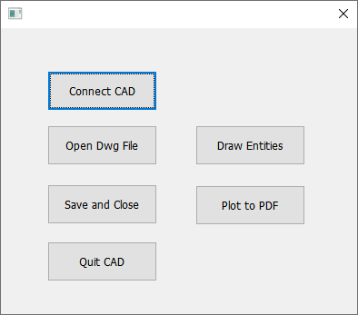
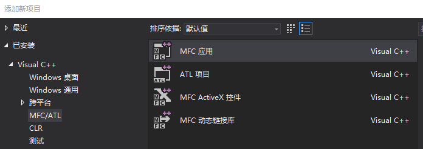

说明
在上一章中我们介绍了ZWCAD COM组件的一些常见类库和用法，本章将介绍一个最典型的示例：外部程序如何通过ZWCAD COM组件来驱动中望CAD来自动化的完成一些功能。
示例功能简介：
本章节将介绍如何新建一个对话框程序，通过调用ZWCAD COM组件来打开一个ZWCAD.exe实例，并且选择一个dwg文件打开它，在dwg中绘制一些实体，并打印这些绘制的实体成一个pdf文件，最后关闭dwg文件退出ZWCAD.exe。

创建一个MFC应用：
通过Visual Studio向导新建一个MFC应用，具体操作方法不做详细描述。

添加头文件并引入COM组件
具体参考上一节。
链接或启动中望CAD：
在对话框类中定义全局的ZcadApplication和ZcadDocument用于操作ZWCAD实例和当前打开的dwg文档。
class CMfcConnectDlg : public CDialogEx
{
...
private:
IZcadApplicationPtr pZcad;
IZcadDocumentPtr pDoc;
...
}
在“Connect CAD”对话框按钮Click函数中添加如下代码：
HRESULT hr;
hr = CoInitialize(NULL);
CLSID clsid;
hr = CLSIDFromString(OLESTR("ZWCAD.Application.2026"), &clsid);
IUnknownPtr pUnk;
hr = GetActiveObject(clsid, NULL, &pUnk);
if (hr == S_OK) {
pUnk.QueryInterface(IID_IZcadApplication, &pZcad);
}
else {
hr = pZcad.CreateInstance(clsid);
if (hr != S_OK) {
AfxMessageBox(L"创建ZWCAD进程失败");
}
}
pZcad->PutVisible(VARIANT_TRUE);
关键函数说明：
1.首先通过GetActiveObject(clsid, NULL, &pUnk)来获取已启动的ZWCAD2025实例。
2.如果上一步获取ZcadApplication实例失败，则通过pZcad.CreateInstance(clsid)新建一个ZcadApplication实例，从表现上来看既启动一个ZWCAD 2025程序。
3.pZcad->PutVisible(VARIANT_TRUE)控制ZWCAD 2025程序是否显示界面，如果设置成false，将是一个zwcad.exe程序在后台运行并不会显示界面（在一些自动化场景中会经常用到这种静默模式）。
窗口选择并打开DWG文档：
在“Open Dwg File”对话框按钮Click函数中添加如下代码：
TCHAR szFilter[] = _T("DWG图纸(*.dwg)|*.dwg");
// 构造打开文件对话框
CFileDialog fileDlg(TRUE, _T("dwg"), NULL, 0, szFilter, this);
CString strFilePath;
// 显示打开文件对话框
if (IDOK == fileDlg.DoModal())
{
// 如果点击了文件对话框上的“打开”按钮，则将选择的文件路径显示到编辑框里
strFilePath = fileDlg.GetPathName();
pDoc = pZcad->GetDocuments()->Open(strFilePath.AllocSysString());
}
关键函数说明：
Open函数中的ReadOnly参数默认设置为false，因为在本示例中会往dwg中添加一些实体，所以要写打开，如果不添加实体只读取数据的话可以设置为VARIANT_TRUE，有一些图纸中可能带有密码，可以用Password填写密码，默认无密码。
添加实体：
在“Draw Entities”对话框按钮Click函数中添加如下代码：
double pts[3]; pts[0] = 100; pts[1] = 100; pts[2] = 0; IZcadModelSpacePtr mspace = pDoc->GetModelSpace(); SAFEARRAYBOUND bound[1]; bound[0].cElements = 3; bound[0].lLbound = 0; VARIANT vtPt; VariantInit(&vtPt); vtPt.vt = VT_ARRAY | VT_R8; vtPt.parray = SafeArrayCreate(VT_R8, 1, bound); vtPt.parray->pvData = pts; mspace->AddCircle(vtPt, 10); mspace->AddText(L"COM Test", vtPt, 2.5);
关键函数说明：
通过IZcadModelSpacePtr提供的一些“Add”方法添加常用实体（更多添加不同类型实体方法可以用过查阅VBA文档获取），本实例演示了添加一个圆心坐标在100,100点半径为10的圆，添加字高为2.5字符串为“Hello World”的文字。
打印PDF文件：
在“Plot to Pdf”对话框按钮函数Plot_to_Pdf_Click中添加如下代码：
IZcadLayoutPtr oplot = pDoc->GetActiveLayout(); oplot->PutConfigName(L"DWG To PDF.pc5"); oplot->PutCanonicalMediaName(L"ISO_A1_(594.00_x_841.00_MM)"); oplot->PutPaperUnits(ZcPlotPaperUnits::zcMillimeters); oplot->PutStyleSheet(L"monochorme.ctb"); oplot->PutPlotWithPlotStyles(VARIANT_TRUE); oplot->PutUseStandardScale(VARIANT_TRUE); oplot->PutPlotType(ZcPlotType::zcExtents); oplot->PutPlotRotation(ZcPlotRotation::zc0degrees); oplot->PutCenterPlot(VARIANT_TRUE); VARIANT vt; VariantInit(&vt); vt.vt = VT_I4; vt.lVal = 0; pDoc->SetVariable(L"BACKGROUNDPLOT", vt); pDoc->Plot->PutQuietErrorMode(VARIANT_TRUE); pDoc->Plot->PlotToFile(L"C:\\Users\\Administrator\\Desktop\\zwcad.pdf");
关闭dwg文件：
在“Save And Close”对话框按钮Click函数中添加如下代码：
pDoc->Save(); pDoc->Close();
关闭ZWCAD：
在“Quit”对话框按钮Click函数中添加如下代码：
pZcad->Quit();